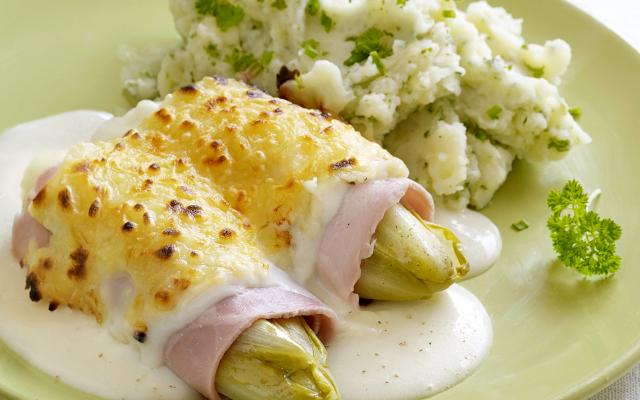

Witloof met hesp en kaassaus

ingrediënten
recept voor 4 personen
- 8 stronkjes witloof
- 0,5 kippenbouillon (vetarm)
- 150g magere kaas (gemalen, light)
- nootmuskaat
- zout
- 5 el gehakte kruiden (bv. peterselie, kervel, bieslook)
- 8 sneetjes magere ham
- 500 ml halfvolle melk
- 40g bloem
- peper
- 750g aardapplen
- 50 ml karnemelk
bereidingswijze
- Schil de aardappelen en kook ze gaar in gezouten water. Giet af en laat even uitdampen. Stamp ze met de karnemelk en de kruiden tot puree. Kruid met nootmuskaat, peper en zout.
- Maak het witloof schoon. Verkruimel het bouillonblokje in een bodempje water. Stoof er de stronkjes in gaar.
- Schep het witloof uit de bouillon en laat uitlekken. Bewaar het kookvocht. Rol de stronkjes in de ham. Leg ze in een ovenschaal.
- Verwarm de grill voor.
- Giet 400 ml melk en het kookvocht van het witloof in een pan en breng aan de kook. Los de bloem op in de rest van de melk en roer het mengsel met een garde door de kokende melk. Blijf roeren tot de saus bindt. Meng van het vuur af 100 g van de gemalen kaas erdoor. Kruid met nootmuskaat, peper en zout.
- Giet de saus over het witloof. Bestrooi met de rest van de kaas. Laat 10 minuten gratineren onder de grill. Serveer met de kruidenpuree.